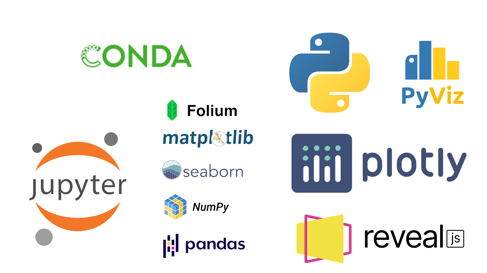

Presented by Mrinal Vashisth M.Sc. Human Development: Genetics, Neuroscience and Psychology
Under supervision of Maxim Likhanov, PhD
iGLAS-LE
International Genetics Literacy and Attitudes Survey
iGLAS-LE is an extension of iGLAS. It is a tool developed by TAGC consortium experts (Chapman, 2017) using Qualtrics software for assesing the ethical and Law: Non Law: Not Students aspects of genetic knowledge. Current version is 10.0 with 17 GK questions, across 5 domains.
“ Understanding people's perceptions and attitudes towards Genetics Science can help us in policymaking. Genetic literacy is about having the sufficient knowledge of genetic principles to make informed decisions in areas of life concerning genetics (Chapman, 2017). And thus, Genetic literacy also becomes a mean of empowerment for individuals (Chapman et al. 2019). ”
Network methods have the potential to quickly highlight the most important features of the data
Tools
I used the following tools in the project Challenges with the dataset
- Mostly categorical variables
- Need to find a way to divide the data to observe patterns
- Are the categories useful?
- How to find important trends in the opinions?
The data is in two formats: binary coded and value coded
I used the iGLAS data dictionary to classify variables and annotate data.
There are two types of variabless Human Rights (HR) and Genetic Rights (GR). I worked mainly with GR.
The resulting metadata helped in quick access within Python. With the help of metadata we can divide the data in any way we want.
Description of the dataset
I used pie and stacked bar-graphs to summarise the data.

Pie charts are usually not the best way to describe, but with percentages they can be useful. Russian participants are the focus group.

- To explore specific questions we need to find a way to divide the data
- I went on to divide the data in 9 categorical divisions.
- Charts and graphs for variable each helped me to understand which divisions would be useful
- For example: The dataset is Russian participant dominant.
- There is a nearly equal division of male to female et cetera.
Categorical divisions
Hard Divisions A participant can belong to one category or another, but not both. Age, Gender, Related to law, and Students.- Gender (Male, Female)
- Age (Old, Young) - Division at mean. We have young participant dominant dataset.
- Students versus non-students - This division was made using variable LE2.060 (University student).
- If students: then Law versus Non-law. And to contrast these students - not students.
Analysis of Categories
Visualisation methods discussed
Objectives
- I want to understand how opinions differ across different classes.
- Is there a relatioship between this variable and if people answered the item about relatedness correctly?
- While clustergram can summarise a lot of information, it is still not enough to summarise interactions.
- I need more sophisticated methods to explore these questions.
Traditional visualisation
- Process flow diagrams are used to study how resources are distributed for a given process.
- We take tuples of paths across the survey items and get sum totals.
- Flow diagrams sound intresting only that...
Sankey Flow
Network Approaches
- Since a single very long path can exist in the survey, we may break it down into chunks of two
- At a given time we take the first node, and look at all possible paths to another node
- We count how many time this group of nodes occured throughout the survey
- The resulting graph summarises all interactions (occurences) of any given pair of options as strength (joint probabilities)
Objectives Revised
- What do the participants think about newborn screening decisionmaking responsibility?
- Is there a connection with likert opinions and other survey items with newborn screening opinion?
- How are Concerns and Genetic Curiosity items related with each other?

Results - Network Analyses
Significance
We are now able to do the following:- Derive some measurable variables from existing categorical variables in the survey data, and analyse them.
- Look at the mico-patterns in opinions across a range of items on the survey using clustering methods and visualisation methods.
- Use the categorical divisions to find patterns using network methods.
- Combine different approaches to gain insights from all categorical data.
Future Work
- Look at longer patterns by either: a.) Finding a computationally efficient approach to permutations larger than 2 items. Or, b.) Making groupings for more number of items. For example, instead of just grouping with Genetic Curiosity, we can collapse the nodes for longer paths. Such as Genetic Curioisty + Level of Concern + Participant Group.
- How can we describe the defined parameter 'Strength' in a leniar space? Understanding this can help us answer more complex questions, for example, if participants agree to something, and they also belong to a particular categorical division, how their opinions change for another survey item.
Conclusion
- Studying patterns in survey data can help us with policymaking. Thus, in effect, it is for the empowerment of individuals.
- We can divide the survey in various categorical divisions, as well as derive some continuous variables.
- We can find important trends and look at survey data as a whole using Network methods.
- Combining Network methods with clustering and visualisations are a powerful tool to understand the structure of the survey responses as well as participant profiles.
- iGLAS-LE addresses difficult ethical and legal issues in Genetics, and highlights the Concerns of participants regarding Genetic Rights.
I am thankful
Extra Slides

- Since a single very long path can exist in the survey, we may break it down into chunks of two
- At a given time we take the first node, and look at all possible paths to another node
- We count how many time this group of nodes occured throughout the survey
- The resulting graph summarises all interactions (occurences) of any given pair of options

-
Additionally, we have two approaches: Permutational and Combinatorial, depending on whether the order is important or not.
- For three likert opinions, I divided the items in permutations of three: a.) Policymaking to Revising and Updating; b.) Revising and Updating to Dissemination of GK, and c.) Dissemination of GK to Policymaking
- In second approach: I just took the combinations of three items.
- If we have three items A, B and C. Then we have following combinations: ['A', 'B'], ['B', 'C'], ['C', 'A']
- All permutations are: ['A', 'B'], ['A', 'C'], ['B', 'A'], ['B', 'C'], ['C', 'A'], ['C', 'B']
 Computationally, it is better to go with combinations, because we have to look at less scenarios. But will we lose information?
Computationally, it is better to go with combinations, because we have to look at less scenarios. But will we lose information?
Permutations: The graph is closed